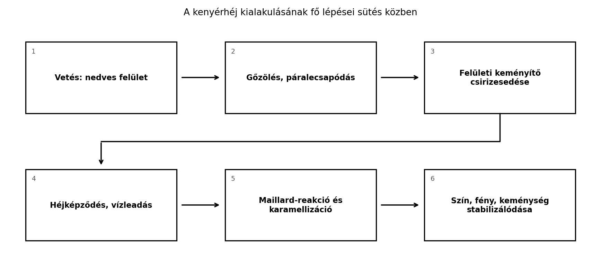

A pék hajnalban kiveszi a kemencéből a búzakenyeret, és azt látja, hogy a héja fakó, repedezett, és a felülete nem a megszokott fényes, aranyló. A vevő a másik polcról választja a szebbik terméket. Ugyanaz a recept, ugyanaz a liszt, mégis más a héj. A különbséget gyakran az a pár másodperc gőzölés, a kemence légterének páratartalma és a felület hőmérsékletének változása okozza, amely a sütés első perceiben a héj kialakulását eldönti. Ebben az alfejezetben azt tanítjuk meg, mi történik a tészta felületén a sütés közben, és miért kritikus pont a gőzölés.
Képzeljünk el egy vékony rétegű, nedves tésztadarabot, amelyet forró kemencébe teszünk. A felületén lévő víz először párologni kezd, a tészta belső hőmérséklete még csak emelkedik. Ha a kemencébe gőzt engedünk, a forró, nedves levegő a hidegebb tésztafelületre csapódik le, vékony vízréteget képez, és megakadályozza, hogy a felület azonnal kiszáradjon. Ezután a felület fehérjéi és keményítője a hő hatására megdermednek, később a felületi réteg vizet veszít, és a hőmérséklet emelkedésével a héj színesedni kezd. Az alábbi folyamatábra ezt a sorrendet mutatja.

A folyamat nem élesen elkülönülő szakaszokból áll, hanem egymást átfedő hőtani, kémiai és fizikai változásokból. A pék ezek közül a gőzölést tudja közvetlenül szabályozni, ezért annak megértése a gyakorlatban sütési hibákat előz meg.
Definíció. A héjképződés a sütés azon folyamata, amelynek során a tészta felületén a nedvesség leadása és a hőmérséklet emelkedése következtében egy viszonylag száraz, szilárd, a terméket körülvevő réteg jön létre. Ezt a réteget nevezzük héjnak vagy kéregnek. A héj vastagsága a termék geometriájától, a sütési hőmérséklettől, a sütőtér páratartalmától és a sütési időtől függ.
Szabály. A héjképződés akkor indul meg, amikor a tészta felületén a hőmérséklet eléri azt a tartományt, amelyben a felületi fehérjék denaturálódnak és a keményítőszemcsék megduzzadnak, majd a felület vízleadása miatt a felületi réteg merevvé válik. Ez a folyamat a sütés első perceiben a leggyorsabb, és a későbbiekben a hő hatolásával a héj vastagsága nő.
Megjegyzés. A kéregvastagság a héj rétegének vastagságát értjük a termék külső felületétől a bélzet határáig; vágási felületen mm-ben mérhető. A héj vastagságát befolyásolja a sütési hőmérséklet és a gőzölés: magas hőmérsékleten, kevés gőzzel vastag, kemény héj alakul ki; alacsonyabb hőmérsékleten és megfelelő gőzöléssel vékonyabb, rugalmasabb héj érhető el. Az értékek termék- és technológiafüggők; tanulási példaként egy átlagos búzakenyér héjvastagsága 2–4 mm lehet (ellenőrizendő: a termék gyártmánylapja és a sütési próba adatai).
Definíció. A Maillard-reakció egy sor nem enzimes barnulási folyamat, amelyben a tészta felületén lévő redukáló cukrok (például glükóz, fruktóz, maltóz) és a fehérjék aminosavai (főként a lizin, aszparagin) magas hőmérsékleten, alacsony nedvességtartalom mellett reagálnak egymással. A reakció jellegzetes barna színanyagokat (melanoidinokat) és aromavegyületeket hoz létre. A folyamat a sütőipari héjszín és a pörkölt, kenyérszerű illat fő forrása.
Definíció. A karamellizáció a cukrok hő hatására bekövetkező bomlása és átalakulása, amely szintén barna színt és kesernyés, karamelles aromát ad. A karamellizáció során nem szükséges fehérje jelenléte, hanem a cukor önmagában, magas hőmérsékleten alakul át. A szacharóz karamellizációja jellemzően 160–180 °C körül indul, a fruktóz már alacsonyabb hőmérsékleten is karamellizálódik (ellenőrizendő: pontos, anyagonkénti hőmérsékletértékek kémiai táblázatok szerint).
Szabály. A kenyérhéj színét a sütés során elsősorban a Maillard-reakció alakítja, mert a tészta felületén fehérje és redukáló cukor egyaránt jelen van. A karamellizáció akkor válik jelentőssé, ha a tészta felületén magas a cukortartalom (például kalácsnál, édes péksüteménynél, mézeskalácsnál), vagy ha a sütési hőmérséklet és az idő olyan, hogy a felületi cukrok elérhetik a karamellizációs tartományt.
Példa. Egy egyszerű vizes tésztájú kenyér héja főként a Maillard-reakció révén lesz aranybarna. Egy tojással, tejjel, cukorral dúsított fonott kalács héja viszont a nagyobb fehérje- és cukormennyiség miatt gyorsabban és intenzívebben barnul, és a karamellizáció is erősebben hozzájárulhat a színhez, ezért a kalácsot általában alacsonyabb hőmérsékleten, illetve rövidebb ideig sütjük, hogy a héj ne égjen meg.
Definíció. A gőzölés a sütési folyamat elején történő vízgőz-bevitel a sütőtérbe, amelynek célja a tésztafelület nedvesen tartása, a héj záródásának késleltetése, a térfogatnövekedés (kemencerugás) támogatása, valamint a héj fényének és rugalmasságának javítása. A gőzölés az ipari és kézműves sütésben egyaránt elterjedt, forgó- és alagútkemencéknél külön gőzfejlesztővel vagy vízpermetezéssel oldható meg.
Definíció. A harmatpont az a hőmérséklet, amelyen a levegőben lévő vízgőz telítettséget ér el, azaz a levegő lehűlve onnan kezdve kicsapja a vízgőzt folyadék formájában. A sütőtérben a gőzölés akkor hatékony, ha a kemence légterében lévő forró, nedves levegő a hidegebb tésztafelülettel érintkezve a felületen harmatképződést, azaz vékony vízréteget hoz létre. A felület addig marad nedves, amíg a hőmérséklete a harmatpont alatt van; amint a felület hőmérséklete a harmatpont fölé emelkedik, a pára nem csapódik le, és a felület elkezd száradni.
Szabály. A gőzölés akkor ad fényes héjat, ha a sütés első szakaszában a tésztafelületen egyenletes, vékony vízréteg alakul ki, és ez alatt a felületi keményítő csirizesedik. A csirizesedett keményítőréteg a későbbi száradás során sima, üvegszerű, fényes felületet ad. Ha a gőz hiányzik vagy túl kevés, a felület hamar kiszárad, a csirizesedés nem teljes, és a héj fakó, durva lesz. Ha a gőz túl sokáig vagy túl intenzíven hat, a héj vastag, nyúlós, túl puha maradhat, és a termék nem kap megfelelő színt.
Példa. Egy kézműves búzakenyeret 240 °C-ra előmelegített kemencébe vetünk. A vetés pillanatában a tésztafelület hőmérséklete kb. 25–30 °C, a kemence légtere 240 °C. A gőz bevezetése után a kemencében a harmatpont például 80–90 °C-ra emelkedhet (a páratartalomtól függően). Mivel a tésztafelület hőmérséklete kezdetben jóval a harmatpont alatt van, a gőz a felületen lecsapódik, nedves réteget ad, és a felületi hőmérséklet lassabban emelkedik. Ahogy a felület eléri a 80–90 °C-ot, a harmatpont fölé kerül, a pára nem csapódik le többé, és a héjképződés felgyorsul.
A sütés alatt a felület és a belső rész között vízleadás és hőfelvétel zajlik. A felület kezdetben a belsőnél jóval forróbb, ezért a víz a felületről a sütőtérbe párolog, illetve a belső felől a felület felé vándorol. A gőzölés ezt a vízleadást a felületen átmenetileg ellensúlyozza, mert a lecsapódó gőz vizet ad a felületnek. Ez az oka annak, hogy a gőzölt kenyér héja hosszabb ideig rugalmas marad, és a belső térfogat növekedése (a gázok tágulása, a gőzfejlődés) nem ütközik azonnal merev héjba.
A gőz hatása a térfogatra: ha a héj korán megkeményedik, a termék nem tud teljesen kiugrani, a kemencerugás elmarad, és kisebb fajlagos térfogatú, sűrűbb bélzetű terméket kapunk. Ezért a kenyérsütésnél a gőzölés a sütés első 5–10 percében a legfontosabb (a pontos idő a termék méretétől és a kemence típusától függ).
A gőzölés hatása a kész terméken jól felismerhető. Az alábbi ábra ugyanabból a tésztából gőzölve és gőzölés nélkül sütött kenyeret vet össze. A gőzölt kenyér héja fényes (1), a vágás szabályosan kinyílt, „fület” képez (2), a térfogata nagyobb (3), a metszetben a héj vékony (4). Gőzölés nélkül a héj fakó, matt (1), a vágás zárt marad, a kenyér oldalt rendezetlenül reped (2), kisebb a térfogata (3), és a héja vastagabb (4).
Az oldalt rendezetlenül repedt kenyér tehát nem feltétlenül túlkelt: a korán megkeményedő héj nem enged a kemencerugásnak, ezért a gáz ott tör utat, ahol a héj a leggyengébb. A HTML-kiadásban a két változat gombbal váltható, és a hibás változatnál a Tipikus hibák 1. pontja olvasható.
Definíció. Az akrilamid egy, a magas hőmérsékletű sütés, pirítás és sütőipari hőkezelés során keletkező kémiai vegyület. Elsősorban a Maillard-reakció egyik lépésében, az aszparagin aminosav és a redukáló cukrok reakciójával képződik, ha a termék felületi hőmérséklete eléri a jellemzően 120 °C fölötti tartományt és a nedvességtartalom alacsony. A kenyér héjában, a pirított gabonatermékekben, a kétszersültben, a kekszekben és a burgonyasült termékekben is képződhet.
Előírás. Az Európai Unió az akrilamid élelmiszerben való csökkentésére külön rendeletet alkotott, amely a sütőipari termékekre is vonatkozik (ellenőrizendő: az (EU) 2017/2158 rendelet aktuális, egységes szerkezetbe foglalt szövege és a nemzeti útmutatók). A rendelet kötelező csökkentési intézkedéseket ír elő (pl. a héjszín szabályozása, a sütési hőmérséklet és idő megválasztása, a nyersanyag-választás, dokumentálás), és termékkategóriánként referenciaszinteket állapít meg; a referenciaszint nem határérték, hanem az intézkedések hatékonyságának mércéje (ellenőrizendő: a rendelet hatályos szövege, esetleges határérték-bevezetés). A pontos referenciaszinteket és termékkategóriánkénti kötelezettségeket a hatályos jogszabály és a NÉBIH útmutatói tartalmazzák.
Szabály. A sütőipari gyakorlatban az akrilamid-képződés csökkentésének leghatékonyabb lépései:
Figyelem. Az akrilamid-képződés csökkentése soha nem mehet a termékbiztonság rovására. Az alacsonyabb sütési hőmérséklet nem vezethet nyers vagy nem kellően átsült termékhez, mert az mikrobiológiai veszélyt jelent. A péknek mindig ellenőriznie kell a maghőmérsékletet, és csak akkor szabad a sütési időt vagy hőmérsékletet módosítania, ha az átsültség és a HACCP-előírások teljesülnek.
HACCP. A sütés során a felületi folyamatok két szempontból is kritikusak:
Mikrobiológiai átsültség. A sütésnek el kell érnie a termék biztonságos maghőmérsékletét. A felületi hőmérséklet gyorsan emelkedik, de a belső hőmérséklet mérése ad bizonyosságot. A kritikus határérték terméktől függ, legalább 96 °C, jellemzően 96–98 °C a kenyérbélben (ellenőrizendő: a pékség HACCP-tervében rögzített maghőmérséklet). Ha a sütési idő csökkentése az akrilamid miatt történik, az átsültséget minden esetben ellenőrizni kell.
Kémiai veszély: akrilamid. A héj túlzott sötétedése kémiai szennyezőt jelezhet. A gyakorlatban a héjszín vizuális ellenőrzése és a sütési paraméterek (hőmérséklet, idő, gőz) dokumentálása a monitoring része. Az akrilamidra jogi határérték helyett referenciaszint és csökkentési intézkedések vonatkoznak, amelyeket a termékre vonatkozó szabályozás és a gyártmánylap alapján követünk (ellenőrizendő: aktuális referenciaszintek és üzemi kritériumok). A héjszín-ellenőrzés ezért minőségi és megelőző monitoring, nem a biztonsági CCP-határ.
A gőzölés minőségi (GMP-) paraméter, nem CCP: hiánya héjhibát okoz. Az élelmiszer-biztonsági ellenőrzés a maghőmérsékleten (átsültség) marad; ha a gőzrendszer hibája a sütési programot megváltoztatja, a maghőmérsékletet kell sűrűbben mérni. A gőzölés monitoringja a gőz mennyiségének, a kemence páratartalmának és a termék megjelenésének ellenőrzése.
Adott: Egy búzakenyeret két azonos kemencében sütnek. Az első kemencébe a vetés után nem engednek gőzt, a másodikba 5 másodpercig intenzív gőzt engednek, majd a gőzölés után a sütés ugyanazon hőmérsékleten és ideig folytatódik.
Keresett: Milyen különbség várható a két termék héjában?
Megoldás vázlata:
Ellenőrzés: A héj színe, fénye és a fajlagos térfogat mérésével a különbség a gyakorlatban is kimutatható. A gőzölés nem helyettesíti a megfelelő sütési időt, de javítja a héj minőségét.
Adott: Egy pékség a fonott kalácsot 200 °C-on 30 percig süti, a héj sötétbarna. Az akrilamid-mérési útmutató szerint a kalács héja az ajánlott tartomány felső határán van (ellenőrizendő: konkrét referenciaszint). A pék szeretné csökkenteni az akrilamid képződést anélkül, hogy a kalács nyers maradna.
Keresett: Milyen beavatkozást javasoljunk?
Megoldás:
Ellenőrzés: Próbasütéssel ellenőrizze a maghőmérsékletet, a héj színét és az érzékszervi jellemzőket. Az akrilamid-csökkentés sikeres, ha a kalács átsültsége megfelelő, a héjszín világosabb, és a termék nem nyers.
Egy kis pékségben a szombati kenyérsütésnél a pék azt vette észre, hogy az első két kenyér héja repedezett, fakó, és a vásárlók panaszkodtak, hogy „nincs rajta az a szép fény”. A pék ellenőrizte a kemence hőmérsékletét, az rendben volt. A dagasztás és a kelesztés is a megszokott módon zajlott. A hiba a kemence gőzölőjében volt: a gőzfejlesztő vízszűrője részben eltömődött, így a sütés kezdetén a gőznyomás alacsony volt, a tésztafelület nem kapott megfelelő mennyiségű párát. A gőzrendszer tisztítása és a vízszűrő cseréje után a kenyér héja visszanyerte a fényes, sima megjelenést, és a térfogat is nagyobb lett. A tanulság: a gőzölés nem kényelmi paraméter, hanem a héjképződés és a térfogat egyik fő szabályozója; a gőzrendszer karbantartása ugyanolyan fontos, mint a kemence hőmérsékletéé.
A felületi folyamatok sikerességét a következő jellemzőkkel ellenőrizhetjük:
A minőségellenőrzés során a pék a sütés közben megfigyeli a héj kialakulását, a sütés végén méri a maghőmérsékletet, és vizuálisan értékeli a héjat. A mért adatokat a gyártmánylap és a HACCP-dokumentáció szerint rögzíti.
Tünet: A kenyér héja fakó, durva, repedezett. Ok: A gőzölés hiánya vagy elégtelen gőzmennyiség, a felület korai kiszáradása. Megelőzés: A sütés elején megfelelő gőz bejuttatása, a gőzrendszer rendszeres ellenőrzése.
Tünet: A kenyér héja túl sötét, égett, keserű. Ok: Túl magas sütési hőmérséklet, túl hosszú sütési idő, vagy a tészta felületén magas cukortartalom (pl. kalács). Megelőzés: A sütési paraméterek csökkentése, a termék gyakori ellenőrzése, az akrilamid-képződésre hajlamos termékeknél a hőmérséklet és idő optimalizálása.
Tünet: A héj vastag, kemény, de a bélzet nyers maradt. Ok: A sütési hőmérséklet túl magas, a sütési idő túl rövid, a termék mérete nagy, a gőzölés nem megfelelő. Megelőzés: A hőmérséklet és az idő összehangolása, a maghőmérséklet ellenőrzése, a termék méretének és tömegének megfelelő sütési program.
A válaszokat a Megoldások elején találjuk.
1. feladat (A) Definiálja a héjképződést és a kéregvastagságot. Milyen tényezők befolyásolják a héj vastagságát?
2. feladat (A) Magyarázza el, mi a harmatpont, és miért fontos a sütőtérben a gőzölés hatékonysága szempontjából.
3. feladat (B) Hasonlítsa össze a Maillard-reakciót és a karamellizációt a héjszín kialakulásában. Melyik folyamat dominál egy egyszerű búzakenyérnél, és melyik egy cukros kalácsnál?
4. feladat (B) Egy pékségben a kenyerek héja rendszeresen fakó és repedezett. A kemence hőmérséklete megfelelő, a gőzölő berendezés viszont nem ad gőzt. Magyarázza el, miért okozza ez a héjhibát, és mit kell tenni a gőzrendszerrel.
5. feladat (C) A fonott kalácsot 205 °C-on 28 percig sütik, a héj sötétbarna, és az akrilamid-ellenőrzés szerint a termék a referenciaszint közelében van (ellenőrizendő: pontos referenciaszint). Javasoljon legalább három olyan műveleti változtatást, amely csökkenti az akrilamidot, de nem rontja a termékbiztonságot. Indokolja mindegyiket.
6. feladat (D) Egy gyakorlati sütés során a pék azt tapasztalja, hogy a búzakenyér héja túl vastag, kemény, és a bélzet a mérés szerint 90 °C maghőmérsékletű, tehát nem eléggé átsült. A sütési idő 25 perc, a hőmérséklet 250 °C. Mi lehet a hiba? Milyen paramétereket változtatna meg, és milyen méréssel ellenőrizné az eredményt?
Héjképződés: a tészta felületén a sütés alatt bekövetkező vízleadás és hőmérséklet-emelkedés hatására kialakuló száraz, szilárd réteg. Kéregvastagság: a héj rétegének vastagsága a külső felülettől a bélzet határáig (mm-ben mérhető). Befolyásolja a sütési hőmérséklet, a sütési idő, a gőzölés, a termék mérete és a tészta összetétele.
A harmatpont az a hőmérséklet, amelyen a levegőben lévő vízgőz eléri a telítettséget, és a felesleg folyadékká csapódik ki. A sütőtérben a forró, nedves levegő a hidegebb tésztafelülettel érintkezve lehűl, és ha a felület hőmérséklete a harmatpont alatt van, a pára a felületen lecsapódik, nedves réteget alkot. Ez a nedves réteg lassítja a héj kialakulását, és lehetővé teszi a felületi keményítő csirizesedését.
A Maillard-reakció aminosavak és redukáló cukrok reakciója, amely a kenyérhéj barna színét és jellegzetes aromáját adja; fehérje jelenlétében mindig ez a domináns. A karamellizáció a cukor hőbomlása, amely akkor jelentős, ha a tészta felületén magas a cukortartalom. Egyszerű búzakenyérnél a Maillard-reakció a fő színképző; cukros kalácsnál a Maillard-reakció mellett a karamellizáció is hozzájárul a mélyebb barna színhez.
Ha nincs gőz, a tésztafelület a sütés első perceiben gyorsan kiszárad. A felületi keményítő nem tud eléggé csirizesedni, a héj korán megkeményedik, megakadályozza a térfogat növekedését, és a felület repedezetté, fénytelenné válik. A gőzrendszert meg kell javítani: ellenőrizni kell a gőzfejlesztőt, a vízellátást, a szűrőket, a gőzszelepeket, és a gőzölés időzítését a sütés első perceire kell állítani.
Javasolt változtatások: - Csökkentse a sütési hőmérsékletet 190 °C-ra, és növelje az időt 30–35 percre, hogy a maghőmérséklet elérje a technológiai lap szerinti értéket (dúsított kelt finompékáru: kb. 90–96 °C; ellenőrizendő: HACCP-terv, gyártmánylap). Ezzel a felület lassabban melegszik, kevesebb akrilamid képződik. - A kalács tésztájában a redukáló cukrok egy részét helyettesítse szacharózzal, ha azt a recept lehetővé teszi, mert a szacharóz nem redukáló cukor, így kevésbé vesz részt az akrilamidot is képző Maillard-reakcióban, mint a fruktóz vagy a glükóz. - A sütés végén ellenőrizze a héjszínt: cél az aranybarna, kerülje a sötétbarnát. A gőzölést ne csökkentse, mert a száraz felület gyorsabban forrósodik fel. - Minden változtatás után mérje a maghőmérsékletet; ha az átsültség megfelelő, a biztonság nem sérül.
A hiba oka: túl magas sütési hőmérséklet (250 °C) és aránylag rövid idő (25 perc) a nagy kenyérhez. A felület gyorsan felmelegszik, vastag, kemény héj képződik, miközben a hőnek nincs elég ideje a belső rétegekbe hatolni, ezért a maghőmérséklet csak 90 °C. Változtatás: csökkentse a kemence hőmérsékletét 220–230 °C-ra, növelje a sütési időt 35–40 percre (a termék tömegétől függően), ügyeljen a sütés eleji gőzölésre, és a sütés végén mérje a maghőmérsékletet, amelynek el kell érnie a legalább 96 °C-ot (jellemzően 96–98 °C). Ellenőrzés: maghőmérővel a termék közepén mérve, valamint a bélzet vágási felületének vizsgálatával.
A sütés során a tészta felületén a héjképződés a vízleadás és a hőmérséklet-emelkedés következtében megy végbe. A héj vastagságát a sütési paraméterek és a gőzölés szabályozzák. A héjszín elsősorban a Maillard-reakcióból származik, amely aminosavak és redukáló cukrok reakciója, és a karamellizáció akkor válik jelentőssé, ha a felület magas cukortartalmú. A gőzölés a sütés elején a hidegebb felületen lecsapódó pára révén nedves réteget ad, amely lehetővé teszi a felületi keményítő csirizesedését, és ezáltal fényes, sima, rugalmas héjat és nagyobb térfogatot biztosít. A harmatpont az a hőmérséklet, amelyen ez a lecsapódás bekövetkezik. A túlzott barnulás és az akrilamid-képződés elkerülése érdekében a hőmérséklet-idő kombinációt optimalizálni kell, a héj színét ellenőrizni kell, és az átsültséget mindig maghőmérséklet-méréssel kell igazolni. Továbbvitt eredmény: a héjképződés és a gőzölés itt bemutatott elveit használjuk az A sütés hőszükséglete és a termikus hatásfok, a Fánkok és zsírban sütött termékek és a Mézes tészták sütése alfejezetekben; a sütési paraméterek és a maghőmérséklet ellenőrzése a HACCP-rendszerben is kulcsfontosságú.